12.31.2010 19:28
10 years of fink
Today is the approximate 10 year birthday of the Fink debian based packaging system for the Mac.
2010-12-31: Happy 10th Birthday to Fink! The Fink project was started in the waning days of December 2000 by Christoph Pfisterer, using the "public beta" release of Mac OS . Within a year, versions 10.0 and 10.1 of OS X had been released, and Fink usage took off. Our founder chrisp stepped away from the project in November 2001, and the community took over. The Fink community is the heart of Fink, involving both package maintainers and Fink users, as well as the small core team which tries to keep the overall system in good shape. The success of this community in keeping Fink viable and active over ten years is really quite remarkable! Let's all join together to keep Fink going for a long time to come. How long? In the memorable words of Buzz Lightyear: To Infinity and Beyond!Looking back, I can search the package submission tracker for goatbar. My first submission was for proj 16-Sept-2003. I then made my first CVS commit in the fall of 2004. I think it was Coin or Density that was my first submission.
It's fun to see my open source commit activity via cia.vc:
The last message was received 0.96 weeks ago at 06:38 on Dec 25, 2010 0 messages so far today, 0 messages yesterday 0 messages so far this week, 4 messages last week 0 messages so far this month, 6 messages last month 576 messages since the first one, 6.16 years ago, for an average of 3.9 days between messagesI think that it is missing my github contributions and it's just fink.
I have Lisa Tauxe to thank for getting me my first Mac of my own. I got a 15" GumDrop iMac:
Source: File:IMac G4 Generations.jpg (Wikipedia)

12.30.2010 12:00
Deepwater Horizon NOAA data archive
The website contains previously released public information related to
the response, including:
* 450 nearshore, offshore and cumulative oil trajectory forecasts
* 33 fishery closure area and 9 fishery reopening maps
* 129 wildlife reports for animals including sea turtles and marine mammals
* 58 nautical chart updates
* 38 Gulf loop current location maps
* More than 4,000 "spot" weather forecasts requested by responders
The archive also contains image and video galleries, fact sheets and
publications, press releases and transcripts, educational resources,
and mission logs by crew members on board several of the eight NOAA
ships responding to the spill and the damage assessment. NOAA will
continue to update the website with information products in the weeks
and months ahead.
The front page is: http://www.noaa.gov/deepwaterhorizon/, but really you have to dig deeper for actual data.
The data index is closer, including GeoPlatform. Only some of the layers in geoplatform allow download. For example, the agreement with the USCG means that I can show you the response vessels from AIS updated every 2 minutes, but I can't provide a download link.
There is a lot more data at the National Oceanographic Data Center (NODC) Deepwater Horizon Data page. For example, there is the Gordon Gunter's CTD and XBT page with the actual data sitting here:
http://www.nodc.noaa.gov/archive/arc0028/0065703/02-version/data/0-data/GordonGunter/
There is also a Image/Photo Gallery. However, there are probly hundreds of thousands of photos from people who worked the spill that could be useful, but are not linked in anywhere. Specifically, if anybody has photos of ERMA, GeoPlatform, GIS, field computers or oceanography work and are willing to share, please get in contact with me. I am despirate for photos of this stuff in action.
12.30.2010 11:20
NOAA's 2011 Hydrographic Survey Season
The hydrography projects page talks about the field season with continental US and Alaska maps.
This comes up a lot in my conversations with mariners: How can I get NOAA or the Army Corps of Engineers (ACOE) to survey my area? Here are my throughts on what you can do. The key is to take control of your own future.
First, talk to your NOAA "Nav Manager". This NOAA officer's job is to talk to the community in an area to find out what the issues might be. If you do not talk to this person about the issues in an area, then chances are that NOAA doesn't know about issues.
Regional Navigation Managers
Second, report things that are wrong/missing in Charts or the Coast Pilot to NOAA's Nautical Discrepancy Reporting System. It's definitely a bummer that you can't track your submittions, but there are people behind the system that see what you submit.
Third, if you don't have an AIS transmitter, get one. I helped put together the database that NOAA is using to look at ship traffic to help prioritizing surveying. If you do not have an AIS putting out your vessel positions, you will not show up on the traffic density plots. The lower the vessel traffic for an area, the less likely it is that it will be resurveyed.
Fourth, you might consider using your echosounder to map the bottom. If you work in an area that has a rapidly changing bottom, you can submit documentation about problem spots. NOAA and ACOE can't use your data to change the charts, but it can definitely help them get a clear picture of issues. I know that Kirby does this for some of the inland waterways that are critical to their work and they have established a working relationship with their local ACOE reps. Go Kirby!
Hey, it can even be fun! You can get started with MB-System for free and you can use your single beam echo sounder already on your ship. Multibeam is not required. You can even do it on your own. Check out Ben Smith's hydrography page.
See also:
NOAA Finalizes Plans for 2011 Survey Season [MarineLink.com]
NOAA Plans for 2011 Hydrographic Survey Season
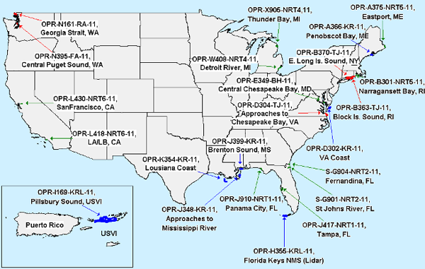
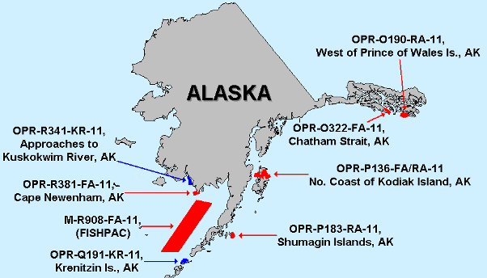
12.28.2010 23:44
Two AIS posts on Panbo re AIS
ShipFinder iPhone/iPad giveaway, Happy Holidays ended up with a discussion in the comments about the risks of releasing AIS data on the internet.
The second is: Class B AIS filtering, the word from Dr. Norris with 17 comments so far.
I reiterate my call for ITU, NMEA, and the IEC to openly publish their specifications (without pay walls) to allow a better informed maritime community and to promote innovation.
12.28.2010 19:56
AIS transceiver - not transponder
AIS devices are not transponders. The aircraft units are transponders that get asked for their ID. AIS devices transmit under their own control in almost all cases. In the US, you will never see the unit be interrogated for a response. These devices are technically transceivers. I know it's a lost cause with radio vendors using the wrong terminology, but I have to try.
The following messages initiate transponder mode:
- 10 UTC/date inquiry
- 15 Interogation - request for a particular message
If you are looking for a marine transponder, a good example is a Racon.
When terminology gets sloppy, things get hard to follow.
12.28.2010 10:05
Who did what for the Deepwater Horizon oilspill?
... "For the Deepwater Horizon incident, we provided AIS data to support the responders," Rosenberg said. "The unified command for the incident was run out of Houma and then there were additional command centers associated with the response. Most of our activity was with the Plaquemines Parish operating branch located in Venice." Rosenberg said that, associated with the Deepwater Horizon spill response, many different types of government users had access to his company's system. In a press release, Scott Neuhauser, Deputy Branch Director for Plaquemines Parish with BP, said PortVision had significantly improved how vessel activity was managed in relation to the oil spill response and restoration operation. "PortVision has given us significantly greater visibility into what's occurring in the field so that we could assess progress and more effectively allocate the more than 30,800 personnel, 5,050 vessels and dozens of aircraft that are engaged in the response effort," he said. ...At the direct request of NOAA, I was working 7 days a week / 12+ hours developing and supporting vessel and personnel tracking. I'm not getting paid for it because I will not sign a non-disclosure agreement that came after the fact that is contradictory to being an academic researcher. During this time, the team I was on was coordinating with Good, FindMeSpot, USCG NAIS, and with Admiral Thad Allen (the incident commander) and his captains, but I know nothing about PortVision's work (except through press releases). I know that ERMA was being used in the USCG and NOAA command centers.
See also: BP not sharing AIS with NAIS and ERMA (my blog on 2010-Aug-25)
12.24.2010 17:53
The best possible python file reading example
Python - parsing binary data files
My main constraint is that I am requiring Python 2.7.x. I should really make the read work with Python 3.x, but I'm not sure how to do that.
But... I am now at a point where I want to create the complete and final version. I can then back fill the second half of the chapter. The question is what do you all think should be in the end code and how does what I have so far stack up? I've just taken a stab at a __geo_interface__ and I've used Shapely. It can now do GeoJSON I want to provide simple SQLite, CSV, and KML writing.
If you are into python and up for giving the chapter and code a look, I could really use some feedback!
Things on the todo list... should do or not do any of these and if I should implement them, are there any strong opinions on how or best examples?
- How to produce a good python package with a nice setup.py using distribute.
- Submitting the package to pypi along with creating eggs, tars, sdist, rpm, and deps. That probably also means I should talk about stdeb for making Debian packages
- documentation - pydoc and/or sphinx (it seems that epydoc is out of favor)
- unit and doc testing. I like separate doctest files. And what about nose and other test systems?
- optparse command line interface
- using sqlite3 to make a simple database
- allowing the iterator to handle every nth sample or have a minimum distance between returned datagrams
- kml output that has some flexibility
- Possibly examples using sqlalchemy and/or sqlobject ORMs to access a database. What are some good Python ORM solutions? on Stack Overflow
- Using pylint and/or pychecker to improve the code
- Should this driver know anything about plotting or numpy?
- Using a small C library to speed up reading in a batch of data from the file.
- Performance tuning
For databases, should I also include writing to SpatialLite and PostGIS? Or is just exposing WKB and WKT enough? I don't think ORM tools other than in GeoDjango support spatial database columns.
And what about optimization? Things like being able to return numpy arrays probably do not want to use the iterator. They should likely run in a really tight loop and only decode with struct the bare minimum.
This chapter is going to be super heavy, but I'm not too worried about that. So what else am I missing?
Yeah, so that is a ton of questions and most of them do not have a single correct answer.
The code so far is on my secondary blog along with a place to comment:
The best possible python file reading example
12.23.2010 15:55
GeoMapApp for the iPhone/iPad - Earth Observer
There is now a companion iPad / iPhone / iPodTouch app to go with GeoMapApp: Earth Observer App that is free at the moment.
I only have my iPhone with me, so here are some iPhone screen shots:
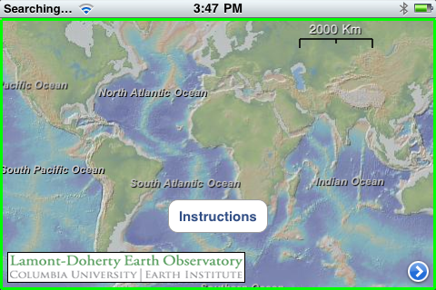
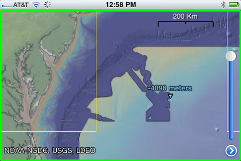
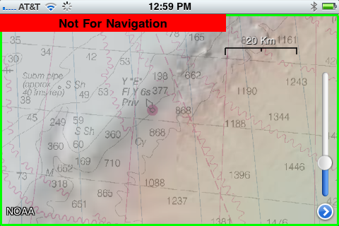
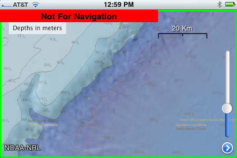
Thanks to Dale for pointing me to this.
Trackbacks:
2010-Dec-23: Monica on Facebook
2010-Dec-24: Art - Earth Observer
2011-Jan-07: SlashGeo - Friday Geonews: FacilMap.org, NOAA Bathymetry Viewer, ESRI's GeoDesign, Australia Flood Maps, GLONASS Phones, and more
12.23.2010 12:13
After the storm in San Diego
12.22.2010 15:50
Active geology - landslide in San Diego
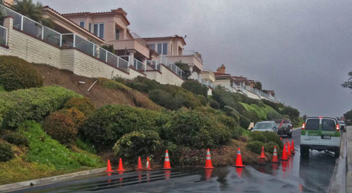
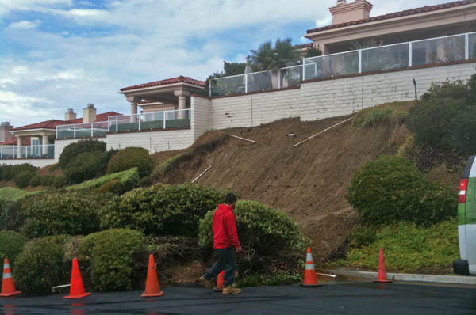
12.22.2010 13:27
Django security update
I just commited Django 1.2.4 to fink unstable to fix the following two security issues with Django. Please update your django installs in fink or elsewhere!
Information leakage in Django administrative interface ====================================================== The Django administrative interface, django.contrib.admin, supports filtering of displayed lists of objects by fields on the corresponding models, including across database-level relationships. This is implemented by passing lookup arguments in the querystring portion of the URL, and options on the ModelAdmin class allow developers to specify particular fields or relationships which will generate automatic links for filtering. One historically-undocumented and -unofficially-supported feature has been the ability for a user with sufficient knowledge of a model's structure and the format of these lookup arguments to invent useful new filters on the fly by manipulating the querystring. As reported to us by Adam Baldwin, however, this can be abused to gain access to information outside of an admin user's permissions; for example, an attacker with access to the admin and sufficient knowledge of model structure and relations could construct querystrings which -- with repeated use of regular-expression lookups supported by the Django database API -- expose sensitive information such as users' password hashes. To remedy this, django.contrib.admin will now validate that querystring lookup arguments either specify only fields on the model being viewed, or cross relations which have been explicitly whitelisted by the application developer using the pre-existing mechanism mentioned above. This is backwards-incompatible for any users relying on the prior ability to insert arbitrary lookups, but as this "feature" was never documented or supported, we do not consider it to be an issue for our API-stability policy. The release notes for Django 1.3 beta 1 -- which will include this change -- will, however, note this difference from previous Django releases. Denial-of-service attack in password-reset mechanism ==================================================== Django's bundled authentication framework, django.contrib.auth, offers views which allow users to reset a forgotten password. The reset mechanism involves generating a one-time token composed from the user's ID, the timestamp of the reset request converted to a base36 integer, and a hash derived from the user's current password hash (which will change once the reset is complete, thus invalidating the token). The code which verifies this token, however, does not validate the length of the supplied base36 timestamp before attempting to convert it. An attacker with sufficient knowledge of a site's URL configuration and the manner in which the reset token is constructed can, then, craft a request containing an arbitrarily-large (up to the web server's maximum supported URL length) base36 integer, which Django will blindly attempt to convert back into a timestamp. As reported to us by Paul McMillan, the time required to attempt this conversion on ever-larger numbers will consume significant server resources, and many such simultaneous requests will result in an effective denial-of-service attack. Further investigation revealed that the password-reset code blindly converts base36 in multiple places. To remedy this, the base36_to_int() function in django.utils.http will now validate the length of its input; on input longer than 13 digits (sufficient to base36-encode any 64-bit integer), it will now raise ValueError. Additionally, the default URL patterns for django.contrib.auth will now enforce a maximum length on the relevant parameters.
12.20.2010 22:24
Stats can be exciting - really!
Hans Rosling's 200 Countries, 200 Years, 4 Minutes - The Joy of Stats - BBC Four:
12.20.2010 22:14
My blog's reading level - intermediate
schwehr.org/blog reading level by Google.
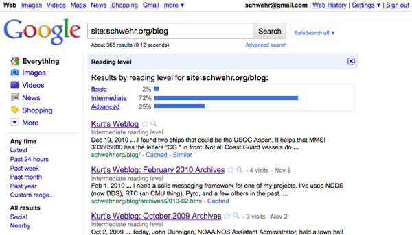
How did I do that? I used "site:schwehr.org/blog" in a google search, select advanced search, and then selected to show reading level.
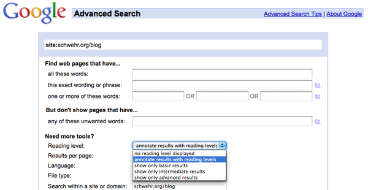
12.19.2010 15:21
AIS misconceptions - a walk through of position and static data
John Konrad of gCaptian sent me a thread, AIS - Need to Take it with a Grain of Salt, from CruisersForum.com that it a great starting point for discussion on the maze that is AIS. There really needs to be an overview document for AIS and I'm trying keep working on it. The specification for AIS, ITU-R.M.1371-3, is hidden beyond a paywall (>$300), and it is written by and for electrical engineers - not mariners or software engineers.
This initial quote from markpierce, set things off. I will make this overly long winded, but the summary is that there are misinterpretations by the posters that I would like to correct. The 102.3 knots actually means that "speed is not available". My low level software does not always tell you things like this, but it should. Vendor software should NEVER display 102.3 knots.
markpierce: Current AIS data shows the U.S. Coast Guard Cutter
Aspen, of the Juniper Sea Going Buoy Tender class, is moored at Yerba
Buena Island (in San Francisco Bay), making 102.3 knots
First, I want to pull the ship from ERMA's backend database to see what it is getting. I over simplify things in the database to keep it fast, but it will let me see what is up with the ASPEN.
Referring to ships by name is not helpful to someone like me looking at AIS traffic from the entire United States and sometimes the globe. AIS names are often ambiguous or misspelled. Additionally, everything in AIS is keyed off of the MMSI (a ship radio ID number). Unfortunately, MMSI numbers are often wrong, which makes understanding AIS data very difficult.
Here is the SQL that I used to find the ASPEN. Note that AIS names are always all CAPITAL LETTERS. There is no option for lower case.
SELECT * FROM vessel_name WHERE name LIKE '%ASPEN%';
| mmsi | name | type_and_cargo | response_class |
|---|---|---|---|
| 303865000 | CG ASPEN | 120 | |
| 371397000 | ASPEN | 52 |
I found two ships that could be the USCG Aspen. It helps that MMSI 303865000 has the letters "CG " in front. Not all Coast Guard vessels do that. There is currently no published standard operating procedure for naming your ship in AIS (but I have seen a USCG draft).
Now I need to pull the vessel position information as I track the course, speed, timestamp (of roughly when I last heard the ship) and position in that table.
SELECT cog,sog,time_stamp,astext(pos) FROM vessel_pos WHERE MMSI=303865000;
| cog | sog | time_stamp | astext |
|---|---|---|---|
| 360 | 102.3 | 2010-12-19 15:08:05-05 | POINT(-122.360931396484 37.8085403442383) |
Now I know that people were likely receiving the number 1023 in the speed field of the AIS position message from the CG ASPEN. From the ITU document (and other public documents like AIVDM.html by Eric Raymond), there is a note that certain speed numbers have special meanings.
1 023 = not available, 1 022 = 102.2 knots or higher
So 102.3 knots means that AIS unit on the vessel is not able to calculate speed. That probably means the AIS unit does not have enough GPS satellites locked or the GPS antenna is detached from the unit (as often happens during ship maintenance).
Now for the gory details. I am going to pull a raw logged position message and break it apart for you. The hard part for me is finding a message from the ship. I need to pull a small chunk of AIS data from yesterday's logs that contains a small enough piece subset of messages that I can search it. I know that base station b003669710 is located in North Richmond, CA. (Yes, basestations announce their GPS position over AIS, so it's location is public knowledge). The station is appended by the USCG software to each line, so I can use the GNU grep command to get just that basestation from the 4.2GB log file (54 million NMEA lines) from yesterday.
If I just wanted the position message, I wouldn't have to go through the "normalize" process, but I want to show you the vessel name info too. That spans two lines and normalization turns multiline nmea into 1 long line per message. I can then easily filter by MMSI.
grep b003669710 uscg-nais-dl1-2010-12-18 > b003669710-20101218.ais ais_normalize.py b003669710-20101218.ais > b003669710-20101218.ais.norm ais_filter_by_mmsi b003669710-20101218.ais.norm 303865000 > b003669710-20101218.ais.norm.303865000 tail -2 b003669710-20101218.ais.norm.303865000
That left me with 904 AIS messages. The last command shows me the last two lines of the subset file. The first message is a 5 (name / "static data") and the second shorter message is a 3 (Class A position).
!AIVDM,1,1,5,A,54QjLb0000000000000<N05=0Dr222222222220S58L;8400004hC`1TPCPjDhkp0hH8880,2*42,b003669710,1292716710 !AIVDM,1,1,,A,34QjLb5P?wo?p4RE`Ui>4?vH0DgJ,0*14,b003669710,1292716727
Since the question was about the speed initially, here is the decoded position message with Speed Over Ground (SOG) using my noaadata python software:
ais_msg_3_handcoded.py -d '!AIVDM,1,1,,A,34QjLb5P?wo?p4RE`Ui>4?vH0DgJ,0*14,b003669710,1292716727'
position:
MessageID: 3 # Class A position
RepeatIndicator: 0 # This message not repeated
UserID: 303865000 # MMSI
NavigationStatus: 5 # 5 == moored
ROT: -128 # Rate of turn. Raw value of -128 indicates no turn information available
SOG: 102.3 # Speed over ground. The raw value was 1023, which indicates speed not available
PositionAccuracy: 1 # Position is accurate to less than 10 meters
longitude: -122.36093167
latitude: 37.80854
COG: 360 # The raw value of 3600 indicates no course available
TrueHeading: 511 # No ship's heading available. This requires a compass input
TimeStamp: 12 # Second of the minute that the report was generated
RegionalReserved: 0 # I don't have code for the "special manoeuvre"
Spare: 0
RAIM: False # Receiver accuracy integrity monitoring (RAIM) *not* in use
sync_state: 0 # Time is directly UTC from a GPS
slot_increment: 5309 # Next slot this transmitter will use
slots_to_allocate: 5 # Surprisingly 5 means "1 slot" and 1 means "2 slots"
keep_flag: 0 # The 0 means the transmitter is giving up the slot it just used
I have added some annotations after the '#' character on most lines. Hopefully that will help you understand the lines. The position accuracy of 1 (high) is contradictory to the SOG being unknown. Here is my attempt to write out the English paragraph from the ship: <pre>This ship with MMSI 303865000 is moored at this location and its position is accurate to less than 10 meters. The ship does not know if it is moving and if so, it does not know in what direction it is moving. This ship does not providing heading to AIS.</pre> Now on to the static data message number 5. This is mostly stuff entered by people and frequently wrong.
For reference here is the Aspen's home page at the USCG: USCGC ASPEN (WLB 208)
~/projects/src/noaadata/ais/ais_msg_5.py -d '!AIVDM,1,1,5,A,54QjLb0000000000000<N05=0Dr222222222220S58L;8400004hC`1TPCPjDhkp0hH8880,2*42,b003669710,1292716710'
shipdata:
MessageID: 5 # Class A static data
RepeatIndicator: 0 # Not repeated
UserID: 303865000 # MMSI
AISversion: 0 # Using the first AIS version: ITU-R M.1371-1. Not ITU-R M.1371-3.
IMOnumber: 0 # No IMO number available for this ship
callsign: @@@@@@@ # This ship has *NO CALL SIGN*. '@' characters mark the end of strings.
name: CG ASPEN
shipandcargo: 35 # Engaged in military operations
dimA: 41 # Distance in meters to the bow from the GPS
dimB: 28 # Distance in meters to the stern from the GPS
dimC: 11 # Max distance to the port side from the GPS
dimD: 8 # Max distance to the starboard side from the GPS
fixtype: 1 # Uses GPS for positioning
ETAmonth: 0 # No destination time set
ETAday: 0
ETAhour: 0
ETAminute: 0
draught: 0 # Magically floats on the water
destination: SAN FRANCISCO CA # Heading to San Francisco
dte: 0 # Data terminal available. Has minimum keyboard display
Spare: 0
The above information says a lot about the vessel. First, the device is using the first version of the ITU AIS specification. With versions -1 and -3, there are no huge changes, so we can mostly ignore this. Then there is a a zero for the IMO number implying that there is no IMO number for the vessel. I don't believe that US Government vessels must have an IMO number, but it would be great if someone who knows can set me straight. Then the callsign is a big mess up. I'm sure that USCG vessels have call signs. Next come the ships type. 35 for military operations sort of makes sense, but there is no way to set multiple types right now (warning… the USCG is likely to do something in the near future that is not an international standard). The Aspen is a "Juniper Class Sea Going Buoy Tender," so I might want to pick something more like 53: port tender or 55: law enforcement, but nothing really fits.
The size is covered in 4 numbers that locate the gps with respect to the maximum extent of the ship in the 4 main ship directions. The length is dimA + dimB or 69 meters long. The width is 11+8 meters or 19 meters wide. Often ship's crew will mess up and enter feet, so never try to use these sizes for cutting things close! Mark 1 eyeball time!
Next is fix type that says the AIS unit is using a GPS for position. The ETA is all zeros meaning that it is not set.
The draught (aka draft) is really frustrating for me. It is supposed to be the "Maximum present static draught". Means you don't know. If you don't know your draft, you should quit right now. Set it and set it right! Change it when it changes. Don't know what this means and what it should be set to? ITU-1371-3 says "in accordance with IMO Resolution A.851". In typical style, the specification does not link to the document, but I found it published by Australia. However, the document doesn't explain what static draft is.
http://www.amsa.gov.au/forms/IMO_Assembly_Resolution_A.851(20).pdf
According to the USCG, the answer is this as published in The Guardian Issue 2 (the USCG NAIS new letter).
The depth of water required for the vessel to float with its present loading condition.
The destination is set to San Francisco. If they sitting at a pier or working on a buoy, they really should change this to "NONE" or something like that. The "dte" flag just lets other AIS units in the area know that the device on the ship has a minimum keyboard display. Often this display is hidden in the back of a very large bridge, so don't count on this display for the mariner to notice anything.
I have seen the draft recommendation page for setting your AIS, but I won't show it until I know it has been released. I forwarded a pretty large list of suggestions for improvements. So hopefully that will be out in the near future.
Military rules
There were comments as to what the military is allowed to do. There does not seem to be a clear SOP as to when to do what. But here is what they can and have been doing with their "Blue Force" AIS units. Note: The USCG made me buy one of these units, so I've actually tried these modes.
- Normal mode - just like a regular class A
- Secure mode - Encrypts the position message and sends it out as a message 8.
- Silent mode - just like an AIS receive-only device
You can force a silent mode device to transmit by sending it a BBM NMEA string, so it really isn't totally silent.
Really, as far as I can tell, there are no rules for US Government vessels to set their AIS any particular way and to fill in the static data fields in any consistent manner. That said, with a friendly word off the record, I have had a number of government vessels set their AIS properly. Additionally, I was told that I was getting Blue Force decrypts during the September-ish time frame in my ERMA feed. I looked and didn't see any extra government vessels in the Gulf Mexico. I didn't look to see if there were message 8's coming in to my other non-blue force feed at the time (it's a lot to sift through).
Here is a sample of what the encrypted traffic looks like at my receiver in Newcastle, NH. There are typically 1 or 2 USCG cutters docked and several navy ships and subs in dry dock. In the NMEA, messages that start "!AIVDM,2," are two line messages.
!AIVDM,1,1,,B,85PH4CQKf2T1wV<TgPB5Hu8iFkKMeOOBbmHAcS26524VcFkaqKFo,0*6E,rnhcml,1292597404.81 !AIVDM,1,1,,A,85PH4CQKf1glv0GC>w0lqrEIWdIE`WI<KLaRqq6jmuUfvII3Wr`4,0*50,rnhcml,1292597405.29 !AIVDM,2,1,9,A,85PH4CQKf@N5aigSp:Nv5aN3@6NsFw>;=T@1wT9u5`dtqPKPhcH3KMAG,0*59,rnhcml,1292597407.99 !AIVDM,2,2,9,A,MJvGa;hse4A:IrTdFC1:c55afHudReHr000DMip,2*55,rnhcml,1292597408.0 !AIVDM,2,1,0,B,85PH4CQKf@N5aigSp:Nv5aN3@6NsFw>;=T@1wT9u5`dtqPKPhcH3KMAG,0*53,rnhcml,1292597408.17 !AIVDM,2,2,0,B,MJvGa;hse4A:IrTdFC1:c55afHudReHr000DMip,2*5F,rnhcml,1292597408.19
I have a small program that tells me the DAC (country code), the FI (which message type for that DAC), the MMSI, and the station for message 8s. rnhcml is the Coastal Marine Lab in Newcastle, NH.
ais_bin_msgs.py 8.ais | sort -u 366 56 369493068 rnhcml 366 56 369493069 rnhcml 366 56 369493070 rnhcml 366 57 369493069 rnhcml 366 57 369493070 rnhcml
12.19.2010 12:10
Frustrations with Dragon Dictate
[rant on]
Nuance should win an award for really lame custom service. I couldn't figure out their web pages so I called them. I purchased Dragon Dictate 2.0 for my Mac laptop this morning. They offered me an educational discount for the professional boxed version for $99 or the download edition for $179. I wanted to get started right away and it is Christmas, so I'm not going to count on shipping these days. They wanted me to talk to a "consultant" about which version I should buy, but that made no sense. Download verson it was. I'm on a slow link, so 4 hours later, I had the 1.2GB zip file downloaded. I decided not to pay $7 for some ridiculous "download protection". Why should I have to pay to re-download something I already bought?
Anyways, I finally fired up the software and the install was easy until it got to the setup your microphone part. I talked at my laptop and nothing happened. I tested the microphone through the System Preferences application and it was fine. I finally figured out that they recently removed support for the internal microphone. WTF! I tried to look at their list of supported microphones and their page was really hard to negotiate. I finally got frustrated and decided to cancel their order. I tried to complain to the sales person that they should let people know when they are about to purchase the product about the new no internal microphone deal with their software and the sails person gave me 4 separate lectures about talking to a consultant. During the conversation, I got an email that my purchase had been canceled and I should get a refund. Then she told me she had already cancel-led it and I needed to answer two questions: 1) Would I agree to never use their software. 2) Would I acknowledge that it would be a copyright violation to ever use their software again. What the heck!?! I tried to explain that I would like to go buy it in a store with the Mic in the box and would that be okay? No answer to that question, but she gave me a toll number to call to get help removing the software. In a final lecture about talking to a consultant, I got upset, told her to shut up about consultants and hung up. Yeesh.
So we looked on the Apple web site and it says that new purchases come with a Microphone. However the box contents lists only a CD for 2.0. Monica gave them a call and the Apple says person was confused, took her number, and said she would contact Nuance to figure out if there is a microphone in the box. Apparently, the Apple person had just as much trouble dealing with Nuance as I did. It took her 30 minutes to get confirmation that there is indeed a microphone in the box.
From what I hear, the software is pretty good, but wow, the customer service reminds me of Sprint (who gave me the best story ever of "Sir, NASA reprogrammed your cell phone and that is why it doesn't work"). Their sales staff should know their products and, while their English was good, two different people I talked to had seriously muffled microphones. When I got frustrated with them and let them know that I had no idea what they said, they both suddenly got easy to hear. What gives?
And what the heck??? Only a USB microphone will work? That is so crap.
Dear Nuance, you might also want to let Apple (and your team that makes the box) know that there is a microphone in there.
Can't wait to get actual working software and give it a go rather being frustrated with then enough to take it out on them in a blog post.
[rant off]
I found their online instructions for removing Dragon Dictate, but here is what I did:
cd ~/Library/Preferences/ ls | egrep -i 'nuance|speech|dragon|dictate' rm com.dragon.dictate.plist cd ~/Library/Application\ Support/ ls | egrep -i 'nuance|speech|dragon|dictate' rm -rf Dragon open /Applications# Throw Dragon Dictate in the trashDon't forget to find your profile if one got created.
Update at 6:00PM: I bought the box version from Apple and it comes with a Plantronics 76805-04 Audio 610 analog mic/headset and a USB Dongle.
12.19.2010 05:07
Converting the PTown AIS station
I was not able to go along as I was sitting on a plane at the time, so these photos are courtesy of Mike Thompson. The yellow box is the ATON. This makes the system much less complicated. The CNS 6000 has three separate boxes: the grey unit with the RF hardware and controller, a black LCD display and keyboard (the required Minimum Keyboard Display - MKD), and a junction box.
This is the basement of the visitor center at the Cape Cod National Seashores next to Province Town, MA. In the first image, the controller computer is also using a web browser to display AIS traffic in the area. I believe that is EarthNC Online.
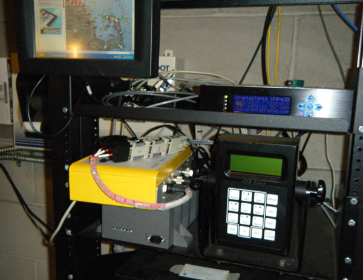
Before the configuration change:
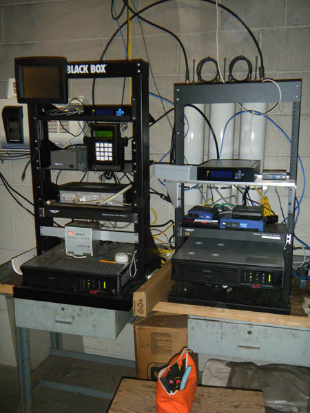
General debugging tips: If you are getting VSWR errors from an AIS device, first check that all of your connectors are firmly seated and screwed down hand tight. If you still have VSWR errors, the next thing to do is check for corrosion in the connectors. Give them a good cleaning. If you really have a mismatched antenna, the best thing to do is to purchase the correct antenna. Shine Micro has lots of high quality, high gain antennas. If that is not an option (e.g. you can't change the antenna), consider purchasing an antenna tuner. You will loose some energy in the tuner, but you will then be able to use the system once it is impediance matched. Consult your local electrical engineer or amateur radio operator if need help.
It is not a good idea to open up the limits for VSWR in the firmware of your AIS device. The Voltage Standing Wave Ratio (VSWR) is a measure of how much energy is being reflected back to the transmitter and not going out the antenna. A 1:1 VSWR means you have a perfect antenna. Larger VSWRs mean you are sending less energy out of the antenna.
I suggest purchasing the The ARRL Handbook for Radio Communications. There is a wikibook, Amateur Radio Manual, but it not very far along.
12.17.2010 23:24
Processing
cd processing-1.2.1; chmod +x processingI tried to run processing, but it didn't find java. I installed java through ubuntu. It ran but got some really strange errors, so I should have known there would be more trouble. I couldn't figure out was up for a while till I realized that it comes with java, but when I set the path, it didn't find java. I finally realized that everything in the java/bin directory was not executable. Crazy.
chmod +x java/bin/*Now it ran. They definitely need to fix their Linux package. It looks like older versions of Ubuntu had processing as a package. It's a bummer that there is no package for 10.10. I also had X11 crash on me. I'm not sure what caused the crash... processing or something else.
I tried it on my Mac and it just worked.
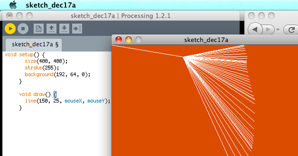
Now I just need a processing tutorial for networking so I can suck in some realtime data.
12.16.2010 17:58
Delicious going away?
Step one (that I should have done anyway) is to backup my Delicious bookmarks. Turns out this is supper easy. Log into Delicious in your browser (if you haven't already). Then go to this URL:
https://secure.delicious.com/settings/bookmarks/export
Press the export button and you will get back HTML that has all the essential data from your personal bookmarks.
<DL><p><DT><A HREF="http://dygraphs.com/" ADD_DATE="1292514927" PRIVATE="0" TAGS="javascript,visualization,data,graphics,timeline">dygraphs JavaScript Visualization Library</A> <DD>scientific graphing for the web. Found by Ben Smith <DT><A HREF="http://gcaptain.com/maritime/blog/u-s-sues-gulf-spill?19204&utm_source=feedburner&utm_medium=feed&utm_campaign=Feed%3A+Gcaptain+%28gCaptain.com%29" ADD_DATE="1292508971" PRIVATE="0" TAGS="deepwaterhorizon">U.S. sues BP and others over Gulf Oil Spill& Offshore News Blog</A> <DT><A HREF="http://www.cisl.ucar.edu/hss/workshops/aguvis2010jc.html" ADD_DATE="1292478859" PRIVATE="0" TAGS="agu,viz">AGU2010 Vis Workshop</A>This is great in that it has XML tags on each A HREF for ADD_DATE, PRIVATE, and TAGS. Then if you made any comments there is a DD with the text you typed. This should be really easy to parse.
Step two: Capturing my tag cloud isn't really that important. I can regenerate something like they have from the 1400 links in Delicious that I've downloaded through the export page. In case it disappears, here is how it looks on schwehr.org.
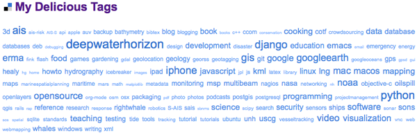
Step three: Find another solution that will work for me if Delicious does indeed go poof. Hopefully, it will just keep going as it is now. But I could either find another service to do the same thing or whip up something myself (e.g. using django).
But I am bummed. I am still tweaking my workflow to best help me, but it definitely includes Delicious. How do I go about things?
First, I follow many RSS links. I read news feeds most mornings on my iPhone using NewNewsWire. I flag articles that are worth thinking about again at some point. NewNewsWire syncs my feeds and flagged articles up to Google Reader. Then, when I'm in front of one of my Macs (yeah, there are currently 5-6 Macs in my work day), I pull stuff from my flagged folder of NewNewsWire on the Mac. Often I only need the book mark for a task that is short term. An example is finding an update of a fink package that I maintain from PyPi. If that is the case, I unflag the article in NewNewsWire and the link goes no further. Some links get flagged and just sit there accumulating. I need to stop doing that. If a link is important for my long term work, it goes into my Emacs Org Mode worklog. If I think the link is publicly important, I open the link in firefox (by clicking the link in either org-mode or NetNewsWire) and hit the Delicious Tag button. For example, I am building up a pretty large DeepwaterHorizon Tag Collection with 116 links. If I want to say something publicly or use this link in work that I will document publicly, then I include the link in a blog post.
Follow all that?
Then, for the rest of the work day, I tend to focus on Firefox and the Delicious Tag button. I get a lot of links through email, IRC, and web searches.
That's my general work flow right now, but there are two aspects that I need to bring in. One is Zotero - a Firefox plugin for references. Monica has a pretty solid workflow with Zotero as it can sync her references between machines. Beth showed me that she uses Zotero much like Delicious. You can share Zotero references (which can be a Journal type thing or just a web link) to a collaboration group. Monica has a second step of using JabRef and a paper collection that is in SVN. Zotero gives you only a small space for PDFs that wouldn't work for most researchers. JabRef is really good at handling linking to files on the disks of your computers. Zotero is really awesome, but the Firefox only thing is trouble.
There is Papers and EndNote, but I'm just not feeling the love for them right now. I own EndNote X, 7 and 6, but I'm tired of upgrades and I don't feel like EndNote works with me well.
Yesh, this is all so complicated. And I haven't even looked into Delicious Python API and grabbing links from people in my network (ahem... only 5 people. Sigh... I'm not very connected).
12.13.2010 09:39
Today at CCOM - Dan's thesis defense and Research at Brown
This morning... I am on Dan's PhD committee.
The Application of Computational Modeling of Perception to Data Visualization A Dissertation Defense by Daniel Pineo on December 13th at 11:00 in Chase 130 Abstract The effectiveness of data visualization relies on the powerful percep- tual processing mechanisms of human vision. These mechanisms allow us to quickly see patterns in visualizations, and draw conclusions regarding the underlying data. Perceptual theory describes these mechanisms, and suggests how to design data visualizations such that they best take advan- tage of the properties of our visual system. However, perceptual theory is often expressed in a descriptive form, making it di_cult to apply in practice. In this talk, I will describe my approach to address these limitations by applying a computational model of perception to the problem of data visualization. The approach relies on a neural network simulation of early perceptual processing in the retina and visual cortex. The neural activ- ity resulting from viewing an information visualization is simulated and evaluated to produce metrics of visualization effectiveness for analytical tasks. Visualization optimization is achieved by applying these effective- ness metrics as utility functions in a hill-climbing algorithm.And this afternoon... David Laidlaw is on Dan's thesis committee.
A Show and Tell of Visualization Research at Brown David Laidlaw (who will channel Caroline Ziemkiewicz), Cagatay Demiralp and Radu Jianu December 13th: 2.00 pm Visualization Classroom, Room 130, Ocean Engineering Bldg. Collectively, we will present a series of short talks about several ongoing research projects at Brown. David will describe some of Caroline's results that show how different visual representations of linkages are interpreted differently. Radu will describe some of his ongoing work to nudge scientists toward "good" analysis behavior. He will also describe pre-rendered google-maps-based web visualization tools for dissemination of various types of scientific data. And Cagatay will describe some of his work on choosing colors as well as joint work with Radu on stylized interaction with brain imaging datasets.
12.11.2010 10:22
Stardot Camera at Jackson Lab
Back on Nov 23rd, Andy and I installed the Camera at JEL up on the roof. The rooftop space was totally redone in the recent rework of the roof and it is totally awesome. We just mounted the camera right on a poll below the weather station. We were able to put the camera at an easy height to work on.
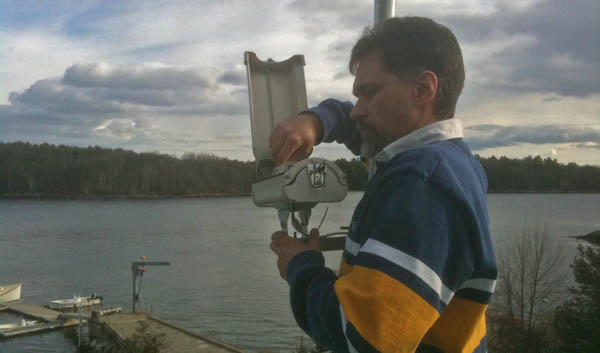
Here is the StarDot camera sitting in the housing. No ladders or crouching required.
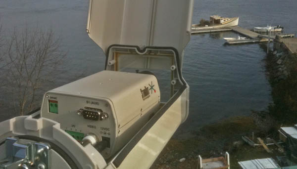
Here is an early test image that I grabbed (this is smaller than the actual) that happened to include CCOM students doing geodesy for one of their classes.
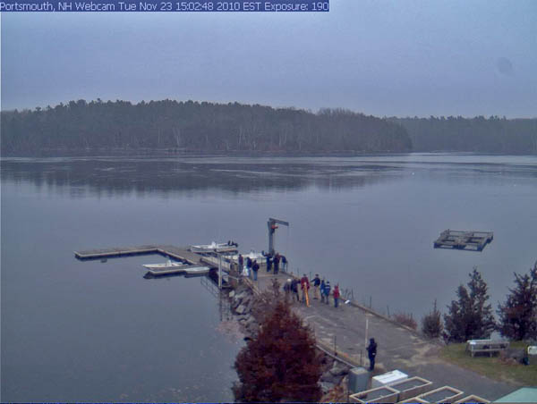
The camera has been getting some serious glare issue that were a serious problem. It is usually best for outdoor cameras to be looking north, but that is not an option at this site. However, just a one notch turn to the left of the camera stand appears to have greatly reduced the issue while still keeping the camera in view.
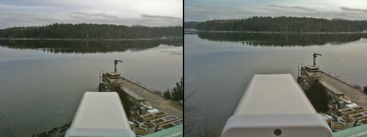
I have been having problems with the Dell Optiplex 380 that is doing the data logging, which is what had me out at JEL yesterday. It has a built in Tioga Broadcom ethernet card that uses the linux t3 driver. It works just fine from a cold boot, but most of the time a soft reboot (e.g. issuing "sudo reboot") has the network card come back in a state where it looses anyhwere from 25 to 75% of the network packets. I also have a second ethernet port on the machine. I started with a e1000 PCI card, but that was a disaster. The camera is now on an external USB 10/100 ethernet device that is much more stable. I tried flashing the bios to the latest (yuck... DOS and two floppy disks). That didn't work and I tried changing a lot of the BIOS options like turning off fast boot and lots of other features. I have yet to solve this. I would really prefer machines in remote areas to let me reboot them when I need to without worry of making sure someone is around or that I have time to drive out to them.
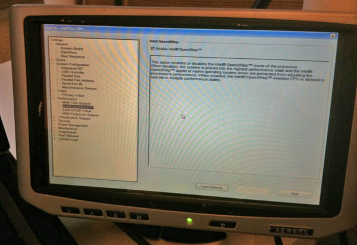
The above image was with a xenarc small form factor display that I borrowed from Roland. It really makes life easier to not have to lug a normal sized LCD display with me for this kind of work.
12.10.2010 12:03
NGDC AutoChart
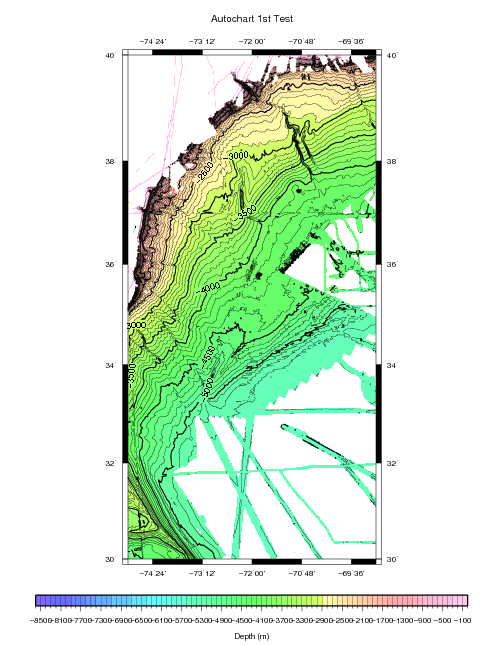
12.10.2010 10:37
FAA and knowing who owns planes
The Federal Aviation Administration is missing key information on who owns one-third of the 357,000 private and commercial aircraft in the U.S. âÄî a gap the agency fears could be exploited by terrorists and drug traffickers. The records are in such disarray that the FAA says it is worried that criminals could buy planes without the government's knowledge, or use the registration numbers of other aircraft to evade new computer systems designed to track suspicious flights. It has ordered all aircraft owners to re-register their planes in an effort to clean up its files. ... Already there have been cases of drug traffickers using phony U.S. registration numbers, as well as instances of mistaken identity in which police raided the wrong plane because of faulty record-keeping. ...Really, this is a big deal? Why? I face AIS data like this all the time and it is solvable, especially if you are the FAA. First, your software should NEVER 100% trust a vehicle to properly self identify. EVER! Even if there were no people miss using the system, mistakes and or transpoder failure is going to occur. Second, your system should be able to figure out if a vehicle is deviating from normal behavior without having to know the id of the vehicle. Third, if you have a vehicle enter into the system that is unknown or under question, ground it until someone at the airport verifies the vehicle. Smaller airports will be trouble, but you will likely want to watch those more than the big airports anyway. Forth, you should have systems already in place that continually work to validate the vehicle database if you care about what is in the database. A camera with optical character recognition and a little info could probably validate plans pretty easily. And I really don't think the actual ID of the plane is really that important for identifying planes that might be causing group:
As a result, there is a "large pool" of N-numbers "that can facilitate drug, terrorist or other illegal activities," the FAA warned in a 2007 report.That means your system is inherently weak if you depend just on the N-number. If you are the police and you raid a plain without doing due diligence, then, what are you doing out there? Use your brain.
I will have to look into the FAA FAA Automatic Detection and Processing Terminal (ADAPT) system to compair what is going on with ships.
12.10.2010 08:34
Winter
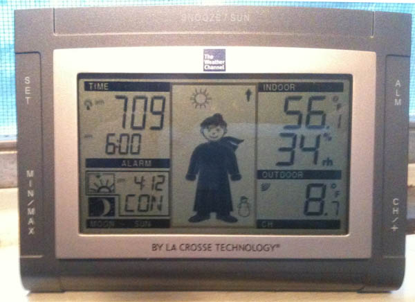
12.09.2010 11:05
New right whale sighting advisory system (SAS) web site for New England
New and improved with all sorts of juicy stuff including a Google Earth map display of right whale sightings by season, yearly aerial survey team reports, how to report a right whale sighting, and links to other important right whale resources!It's pretty awesome that they used my right whale icon. I created that right whale icon for anyone to use, so if you like it, feel free to grab it.
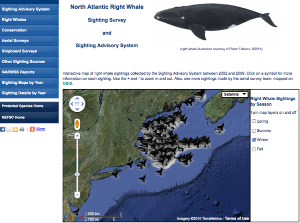
And it works on the iphone!

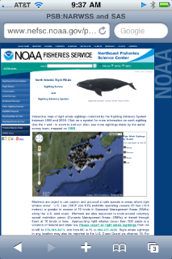
12.06.2010 09:20
AIS feeds from ships
The next question is how do we get data back in real-time? The options are WiMax/3G, Iridium (probably way too slow/expensive), satellite links using TCP/IP, scp, secure rsync, ftp, and ??? Would the USCG AisSource software be able to handle the connectivity experienced by ships where the link often goes down? The key thing is to make sure the data is timestamped properly at receive time with a clock synced to a GPS.
12.04.2010 18:22
First impressions of the Google TV
Update 2010-Dec-08: After using it for a few more days, I now realize that we need a few killer app web sites for Chrome and the App store. I will write version 2 of this when that happens. We did find another issue... when the device has been unplugged from power it takes a very long time (like 10+ minutes) to get back onto our home network. We have is setup to use wired and/or wireless to try to help, but it didn't.
Up front, I have to say that Google gave me a Logitech Revue Google TV. A disclaimer: I do work with Google people, but I have never worked for Google.
The setup was fairly easy. Monica did all the work, but she said the device walks you through the process. We did have trouble today where the device would not talk to our network over ethernet. We setup wifi and now, we see that both wired and wireless work. The HDMI connection works well. It's nice that the device can control the TV volume. We are on a 3360 kbps down DSL link. SpeakEasy SpeedTest reports 2.88Mbps down and 0.73Mbps up for Fairpoint in our area.
The quest is, what is this device for and how does it compare to other devices. Right off, this made me think of Microsoft WebTV that I first got to check out back in 1998 when I was in Pittsburgh, PA. Those devices were ahead of there time as NTSC TVs were just not up to the task. Now, with flat screen HDTVs, things are much better. We are pretty happy with an HD Roku and an XBox 360 hooked up to two different TVs. With the XBox, we are pretty happy with Netflix and the uPnP streaming from the Mac Mini works okay (other than a few codecs that will not work). The Roku is really simple and slick. Thanks to Roland and Chris, we got to try out XBMC on a Linux, Mac, and Windows talking to their home MythTV system. Wow, that is really awesome. They feed the MythTV with a HDHomeRun device.
The Revue is pretty weird. It has a keyboard, but the keyboard is pretty light, so I really need to have both hands on it. Where is the right click button? We have tried the Google Chrome web browser and this lets you write email in gmail and edit documents in Google Docs. But that missing right click in Google Docs makes fixing spelling a problem. You have to know that Ctrl-L will get you the URL field if you know the website you want to go to. Being able to tap click on the trackpad requires a Ctrl-Shift-Fn-Ch/PgUp each time the keyboard wakes up. Very strange.
There aren't many applications on the device yet and we don't currently have cable or satellite TV, so I can't review many of the features. We have a Fairpoint DSL connection without a phone (a "dry line" in Fairpoint/Verizon speak). Therefore, I have no idea if it is a good DVR. All of the channels that you can do over the internet only show you a clip locally. You have to go to the channels internet site to watch.
The Netflix streaming works okay, but the app only shows your instant queue. When watching shows, it's super handy to have your most recently watched list available.
The Crackle website through the spotlight app is interesting, but there are navigation issues with text obscuring the pages along the bottom. Crackle is a new one to me.
The Harmony app for the iPhone works pretty well to control the Google TV, but it is definitely a bummer that adding a device kicks out the previous device. It seems crazy to have to continually pair iphones and ipads.
Once the Android Apps start coming to the Google TV, things might get a lot better and we will likely be switching from DSL to a Cable modem. When we switch, we should be able to start using the DVR functionality. But it looks like we will have to add a USB drive for storage to make the DVR work.
The Logitech Revue TV Cam is interesting, but it is really expensive at $150 and why can't it use Skype?
That missing right click to fix spelling issue is driving us nuts.
We are also thinking about checking out the Dell zino HD that comes with a Blue Ray drive. The Samsung DB-1600 blue ray player is seriously quirky. Pausing a movie means that we have to start over from the beginning and we can't figure out how to skip the previews. It's enough trouble to cause us to stop renting blue ray movies. The pandora streaming is pretty good and netflixs is okay, but the rest seems less than great... even with the latest updates.
12.03.2010 13:28
NAIS Arctic Coverage
By passing this data to the USCG now, you will be helping to prepair the government to respond to any sort of emergency up in your area. Getting this type of infrastructure working during a crisis is much more difficult.
If you would like to talk to me about this, I will will be a the Lessons Learned from the Gulf of Mexico Oil Spill session of the Alaska Marine Science Symposium in Anchorage, AK on Jan 19.
Here is an example of received vessels for 24 hours in Alaska. This does not include satellite receives from SAIS.
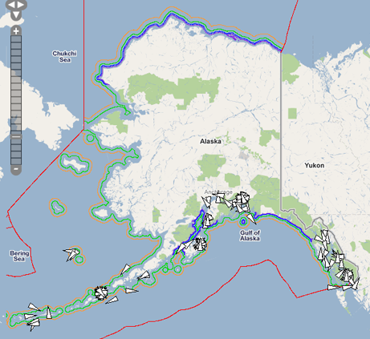
12.02.2010 21:40
Working web camera
Once I had the info I needed from tech support, I was able to figure out how to grab a frame.
wget http://192.168.0.13/cgi/jpg/image.cgi --2010-12-02 21:08:24-- http://192.168.0.13/cgi/jpg/image.cgi Connecting to 192.168.0.13:80... connected. HTTP request sent, awaiting response... 401 Unauthorized Authorization failed. curl --user admin:mypassword http://192.168.0.13/cgi/jpg/image.cgi > test.jpgThe key is to know the IP address of the device and to also specify your username (admin) and your new password.
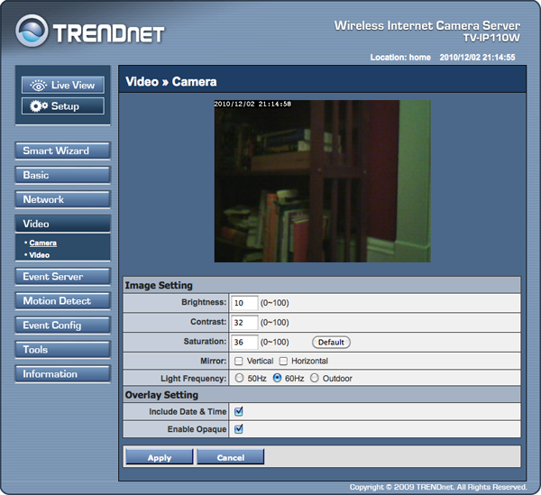
I asked about scp/sftp, and the support person said they would pass the request on.
12.02.2010 09:41
TrendNet TV-IP110W camera
UPDATE 2010-Dec-02: The TrendNet helpdesk told me enough that I can now pull images when I want.
First, I don't see a way to grab a frame with a HTTP get (e.g. via curl or wget). With cameras, I often just grab a frame every so often with a cron job on a separate computer. The second missing feature is scp and/or sftp. I really would prefer to be able to use either password or ssh key authentication to upload content either based on the timer or the motion trigger.
One of the great thing about these cameras is that they are actually running linux. Downloading a tar from the company, it appears that the device is running linux 2.4.19... I am not sure I buy this. That kernel came out August 2002. I also see dnrd-2.18, ez-ipupdate-3.0.11b7, ntpclient, ppoe, samba-2.2.5, wireless_tools.26, and the usual busybox (version 1.01). It wouldn't be too hard for them (I should think) to add scp/sftp out and to allow a url to catch a frame.
12.01.2010 11:41
Which personal wiki?
Wikipedia: Comparison of notetaking software and Comparison of wiki software. Note: neither one has WOAS. There is Personal wiki, which is more the topic at hand.
So... what do people use and why? Things like Trac and such can be backed up, but I can see cross machine deployments being trouble.
Comments can go here: Which personal wiki / note taking system?
Update 2010-Dec-24:
Thanks for the 4 comments to date. There are a couple of things that some of them are missing.
First, I'm okay with a package that requires programming or installing skill. But for others, requiring an install of ruby will be hard on the windows side, especially if the machine is locked down (govt rules that keep people from getting work done).
Second, internet based solutions don't currently seem to work with an unconnected model. Google Docs and Basecamp don't work when you go to work on a ship with only email for a couple weeks. If the internet based systems had an offline mode that allowed things to progress without the internet and then merge back it, that would be awesome!
That said, I think all of the posts so far list tools that I can recommend for certain situations.
I am especially intrigued by Gollem with github-markup supporting emacs org-mode (and lots of other formats). Maybe I should dig a little into ruby. But, I spend most of my time in python with fink.
I can also see a local install of PmWiki with apache and version control being an interesting solution.
The suggestions:
- Google Apps (e.g. Google Docs)
- Basecamp
- digiPIM
- PmWiki - php based
- Gollum - ruby + git